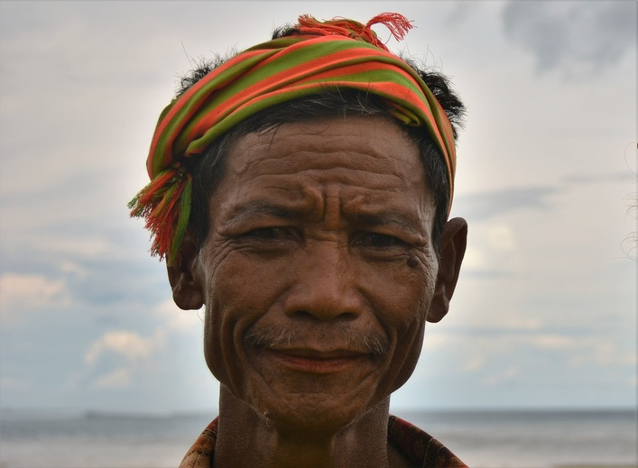

Viaggiare in bicicletta attraverso il mondo: scoprendo così che quanto sfugge a calamità quali il turismo organizzato e le guerre globali è molto di più di quanto ci si possa aspettare. Daniele Giannotta (1982, sound designer, operatore culturale) ed Elena Stefanin (1984, laureata in Scienze Politiche, Relazioni internazionali e Diritti Umani), partendo da Bologna, hanno attraversato i Balcani e per arrivare nelle zone caspiche ai confini dell’Eurasia. Quindi, si sono spinti nell’Estremo Oriente esplorando Cina, sud Corea, Giappone, Filippine, Malesia, Indonesia. Documentano il loro viaggio su Cycloscope e, per il momento, non hanno nessuna intenzione di fermarsi. In questo reportage li incontriamo alle prese con il rito della Pasola, presso l’isola di Sumba, Indonesia.
1. L’isola di Sumba: un caso di semi-colonialismo
Nell’ancestrale villaggio di Ratenggaro, incastonato nel selvaggio paesaggio dell’est di Sumba, tutto è pronto per la Pasola. La gente si raduna qui da tutta la provincia di Kodi ed oltre. Le nostre biciclette attirano lo sguardo di molti, i volti tesi nell’attesa dell’evento sacro. Qualcuno potrebbe morire e diventare eroe, la propria tomba intagliata nella pietra monolitica. Qualcun’altro potrebbe morire, ma nell’infamia, il corpo fatto a pezzi per non aver rispettato le regole della Pasola. Ma cos’è una Pasola? Per cercare di comprenderlo dobbiamo partire da lontano, dall’antica religione Marapu. Ma prima, due parole sull’isola di Sumba.

Isola di Sumba, arcipelago di Est Nusa Tenggara, 650.000 abitanti, una delle più povere isole indonesiane, si vive di agricoltura e allevamento. Più della metà della popolazione non ha accesso all’acqua potabile, la malaria e la dengue sono molto diffuse. I medici scarseggiano e quelli che ci sono costano caro. L’isola venne colonizzata già nel XVI secolo ma, né i portoghesi prima, né gli olandesi poi, la resero una vera e propria colonia. L’isola offriva legno di sandalo e poco più, non molto remunerativo rispetto alle spezie provenienti dalle vicine isole. Questa mancanza di interesse ha favorito il mantenimento di una cultura e di una religione originali.
2. Sincretismi forzati: Marapu e Cristianesimo
Sei sono le religioni riconosciute dal governo indonesiano: Cristianesimo, Islam, Cattolicesimo, Buddismo, Induismo e Confucianesimo. Ma le religioni praticate in Indonesia sono decine, quella Marapu è una di queste, praticata dalla maggior parte degli abitanti di Sumba.

Non si può non appartenere ad una religione in Indonesia, è obbligatorio scrivere nero su bianco sulla carta di identità la propria religione, così i Marapu sono costretti a scrivere “cristiano” o “musulmano” o comunque una religione che riconosca un solo ed unico dio (per essere riconosciuto, l’Induismo Balinese ha dovuto elevare un Dio al di sopra degli altri). Qui moltissimi hanno scelto la religione cristiana, almeno per i documenti ufficiali. Non amano il governo, musulmano, e nell’isola molte scuole e servizi sanitari sono gestiti dalla Chiesa. Spesso è richiesto di essere battezzati per poter proseguire gli studi.
In particolare sta crescendo l’influenza della chiesa evangelica riflessa nelle cerimonie di conversione di massa, anche se molti isolani conservano le proprie credenze praticate in segreto. Gli anziani credono che la conversione rompa il rapporto con gli antenati e la vivono in maniera traumatica. Inoltre la Chiesa é riuscita a vendere meglio la conversione, mescolandola con le tradizioni locali, ad esempio non è raro vedere un funerale tradizionale con tanto di tomba megalitica celebrato da un prete cattolico. Quello che importa, infondo, sono i numeri.
3. Introduzione alla religione Marapu
Il Marapu crede che la vita terrena sia temporanea, e come dargli torto, e che la vita eterna sia nel mondo degli spiriti. Qui, gli eterni spiriti, vivono una vita simile a quella umana.
Il Marapu insegna l’equilibrio della vita universale, questo equilibrio è simboleggiato dalla Grande Madre (In Kalada) e dal Grande Padre (Ama Kalada) che prendono la forma della luna e del sole, che insieme hanno dato alla luce gli antenati dei Sumbanesi. Per onorare questi spiriti, il Sumbanese crea effigi, statue su altari di pietra dove vengono deposte offerte nelle forme di Sirih Pinang (un piatto contenente foglie di betel, noci e lime) e bovini sacrificali.
L’importanza degli antenati viene espressa attraverso le tombe, vestigia di una delle ultime culture megalitiche sopravvissute sul pianeta. In molti casi, le famiglie accendono debiti che si estendono fino alle future generazioni per poter costruire queste pietre tombali in modo tradizionale. Le cerimonie funebri e la sepoltura possono essere ritardate per decenni, fino a che la famiglia non ottiene i soldi sufficienti, e nel frattempo i corpi dei defunti vengono conservati nelle case dei vivi.

Centinaia di uomini partecipano alla cerimonia di Tarik Batu, pietra-trazione, enormi lastre di pietra, fino a 70 tonnellate, vengono trasportate a mano, fino al luogo di sepoltura, adiacente al villaggio. Un gran numero di bufali, mucche, maiali e, occasionalmente, cavalli, vengono sacrificati. Tutti i rituali devono essere compiuti correttamente,
Gli isolani credono, infatti, che sette coppie di uomini e donne siano scese dal cielo su una scala fatta di corna di bufalo arrivando nella parte centro-nord dell’isola, e quindi, anche loro, eseguendo tutti i riti di sepoltura necessari, saranno in grado di risalire quella scala e ricongiungersi con i propri cari.
4. La Pasola
Questa è una Pasola, e non è un gioco. Un rito sacro dove il sangue deve sgorgare, fertilizzando metafisicamente la terra per una stagione senza carestia.

Insieme ai funerali, la Pasola è certamente il rito più importante. Si tratta, per semplificare, di una battagia rituale per celebrare la stagione della semina del riso, o meglio di un rito della fertilità. Due diversi gruppi di uomini provenienti da diversi clan o tribù, a cavallo, si tirano addosso lance di legno acumuninate. Lo scopo è quello di spargere il sangue in modo da fertilizzare il terreno.
Nella regione Wanukaka, dove ci troviamo noi, come parte del rituale, la mattina presto i sacerdoti marapu vanno in spiaggia, sacrificano un gallo nero e ne analizzano le interiora per capire se la Pasola possa avere inizio o meno.
Poi, entrano nell’acqua, alla ricerca di vermi colorati sotto la sabbia. Se li trovano é un buon segno, in particolare se sono grandi e cicciottelli, e la Pasola può partire. In caso contrario il raccolto sarà rovinato e anche la Pasola.
5. Il racconto
Il colore dominante in questa parte di Sumba è il bianco. Pedalando la costa est, tra sterrati di roccia bianca invasi da piccole cavallette bianche e bianche spiagge immacolate, incontriamo i primi villaggi tradizionali. Le case, chiamate una mbatangu, sono di bambù con imponenti tetti di paglia. Non ci sono finestre ma piccole aperture nel muro di foglie di palma intrecciate, il ché rende tutto molto più fresco rispetto alle moderne case in mattoni. Teschi di bufalo vengono spesso posizionati all’esterno in ricordo dei sacrifici che la famiglia ha fatto. Incrociamo sguardi di uomini e donne dai denti rovinati dalle noci di betel. Il paesagio è stranamente arido per un’isola Indonesiana, eppure la stagione delle piogge è appena terminata. La vegetazione è bassa e non ci sono corsi d’acqua in questa zona.

Subito prima del villaggio c’è il campo della Pasola, uno spiazzo di terra dove c’é già qualche uomo a cavallo, i cavalli di Sumba sono molto piccoli ma pare molto resistenti. C’é anche la Pasola Police, uomini che dovrebbero mantenere l’ordine se le cose sfuggissero di mano. In attesa dell’inizio andiamo a visitare il villaggio, duecento metri più lontano, sul mare. Vediamo per la prima volta sull’isola altri bulé (bianchi), ma non troppi. Fuori dalle case stanno preparando da mangiare, una signora sta affettando un cane pronto per essere arrostito ed altri cucinano maiale.
Si vede che questo villaggio è più abituato a vedere turisti ma niente sembra distrarre la gente dalla cerimonia che sta per iniziare. Solo i bambini circondano le nostre biciclette. Ci dirigiamo verso il campo di battaglia, arrivano sempre più uomini a cavallo. Il pubblico è numerosissimo, tutti con il machete nella cintura.

Ad un certo punto, inizia. Tutti si dirigono al centro del campo, discutono tra loro, non sappiamo esattamente cosa succeda, poi tornano ai loro posti ed iniziano. Si tirano le lance, all’inizio sembra un po’ noioso. Il governo ha proibito l’uso di lance acuminate ma pare che i locali, in molti casi, le continuino ad usare. Insomma, non si può nemmeno decidere come morire. Il pubblico esulta ma non capiamo bene perché, seguire non é poi così facile.
Ad un certo punto iniziano a tirarsi sassi, rissa in campo, qualcuno dice che una lancia é stata tirata alle spalle, cosa proibita. Le lance devono essere sempre tirate quando l’avversario é di fronte. La polizia entra in campo ed inizia a sparare, prima in aria e poi a terra. Gli spari sono a pochi metri da noi, ci andiamo a rifugiare dietro un camioncino.
La polizia continua a sparare, la folla, pubblico e cavalli si disperdono. È ora di andare anche per noi. Tornati in città ci dicono che la Pasola finisce sempre con la polizia che spara, in quella che abbiamo visto noi non é morto nessuno quindi si può considerare pacifica. Non però sappiamo che fine abbia fatto il tizio che ha tirato la lancia alle spalle: crediamo non sia finita bene.

In un modo o nell’altro, il sangue deve essere versato.
•
Fotografie degli autori (eccetto la prima, “Quando lo sciamano trova i vermi colorati la Pasola può iniziare”, di Lukas Pokorny) – Sumba, maggio 2015.